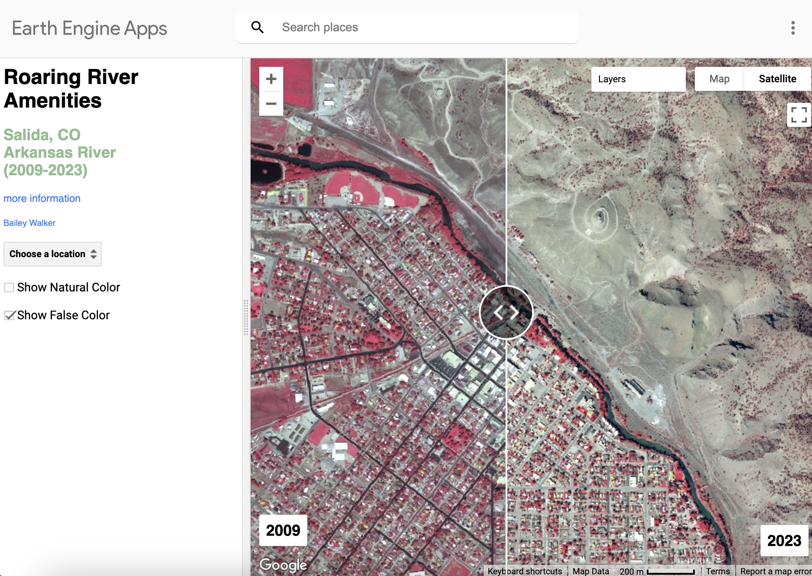

Web Apps
Interactive tools that let people explore environmental change and place for themselves.
[Screenshot: Belize Forest Protection]
Belize Forest Protection
[One-line description.]
Remote sensingGoogle Earth Engine[Screenshot: CZU Burn Severity]
CZU Burn Severity
[One-line description.]
Remote sensingGoogle Earth Engine
Roaring River Amenities in Salida, Colorado
[One-line description.]
Remote sensingGoogle Earth Engine[Screenshot: Spatial Inequities in Denver]
Spatial Inequities in Denver
[One-line description.]
Remote sensingGoogle Earth Engine[Screenshot: SST Blob Anomaly]
SST Blob Anomaly
[One-line description.]
Remote sensingGoogle Earth Engine[Screenshot: Topography Extracted in Southeastern West Virginia]
Topography Extracted in Southeastern West Virginia
[One-line description.]
Remote sensingGoogle Earth Engine